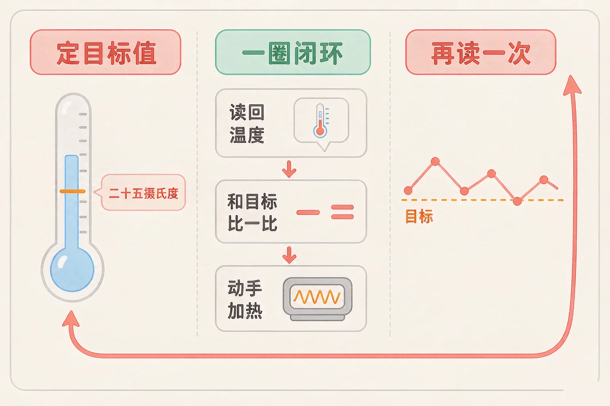
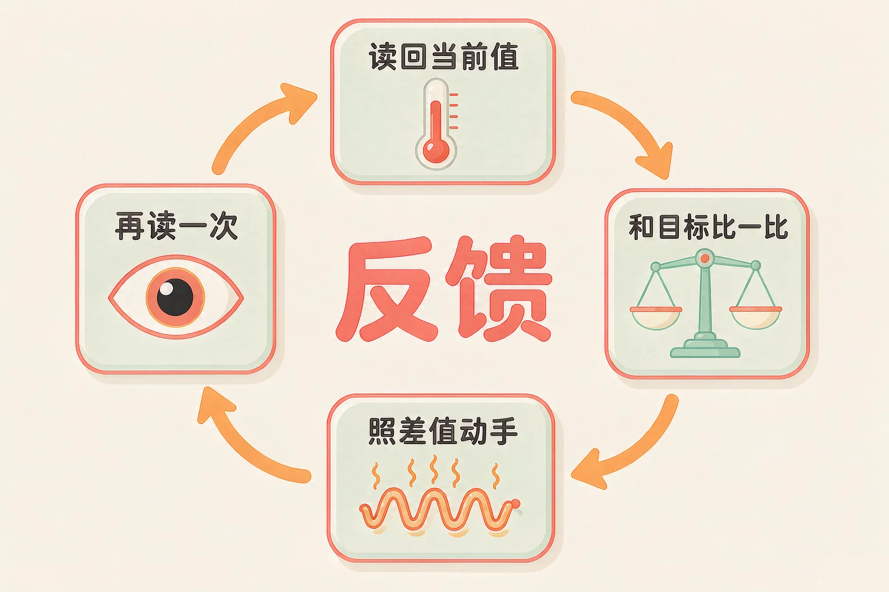
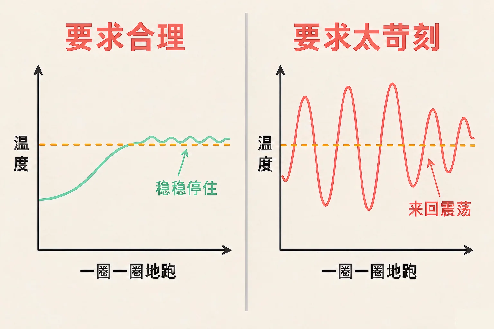

Gallery
v1.0.0 · skill v7.22.0
小学六年级 · 过程与控制
它从来没有一次调到刚刚好——那它凭什么能把温度稳稳守住？

选一个你真正好奇的问题，后面的动手活动都会围着它转。
选择或输入后，这节课会围绕你的问题展开。
先凭直觉选一个，选完立刻看到解释——错了也没关系，正好知道要重点听哪里。
1. 给房间设好 25 ℃ 以后，空调是怎么做的？
它不会一次到位，而是量一次、比一次、动一次，再量一次，一圈一圈地靠近目标。错因提醒：常见错误是把自动控制想成「一次设定就完成」。真实的做法是一直转着圈调整。
2. 反馈控制里，「比较」这一步在算什么？
比较就是一减法：目标值 − 当前值 = 差值。差值正数就往上补，接近零就停手，负数就往下收。错因提醒：容易误认为比较是「做不做」的二选一——其实它先算出一个数，动作的大小由这个数决定。
3. 一台装置把温度调到目标以后，为什么还要再读一次？
再读一次是闭环的最后一步，也是下一圈的开始。没有它，装置就不知道自己有没有把事办好。错因提醒：这是最容易漏掉的一步——不少人以为「动手做完就结束了」。
为什么要学这一课？
我们已经会拆「感知 → 判断 → 动作」这三步了（And）；可只会这三步的装置并不聪明：天亮了它可能还傻乎乎地开着灯，温度到了它可能还在加热（But）；于是要在这三步后面再补上一个「再感知」，让它照着结果回头修正自己——这一圈转起来，才叫反馈（Therefore）。
自动控制和我们平时做事最大的不同是：它做完不算完，还要回头看一眼结果，再照着结果调整。
① 定目标值
希望达到的那个数，比如 25 ℃。
② 读当前值
传感器读回来的真实情况，比如 22.6 ℃。
③ 比一比
两个数相减，看看差多少、往哪边差。
④ 动手 + 再读
照着差值调整，然后再读一次，看现在离目标还有多远。

🔍 深层理解 换个角度再看一遍这件事，看看能不能说出背后的原理。
解释它：为什么不能一次就把温度调到刚刚好？因为加热需要时间，房间还在不断散热，一次动作之后结果难料——所以只能边做边看、边看边改。
比较它：「感知 → 判断 → 动作」是一条直线，做完就结束了；加上「再感知」以后首尾接上，变成一圈。直线只做一次，圈能一直修正自己。
迁移它：你自己练字、跑步也是反馈：写完看一眼歪不歪（再感知），下一笔再调。会回头看的人，进步比只顾埋头做的人快。
先设好目标温度，再点一个环境把房间换掉（环境一换，装置马上就有活干）。然后点「跑一步」，看感知、比较、执行、再感知一格一格亮起来。
温度条：蓝色越满表示现在越热，橙色竖线是目标值所在的位置。
① 感知
等着读温度
② 比较
等着比一比
③ 执行
等着动手
④ 再感知
等着再读一次
先设好目标温度、点一个环境，然后点「跑一步」。
「比较」这一格里，机器只算一次减法：目标值 − 当前值 = 差值。这个差值有正有负，动作的方向和大小全看它。
差值是正数
还没到，要往上补。差得越多，动作越大。
差值接近零
已经到位，可以停手。
差值是负数
超过了，该往下收。

以为「要求定得越准越好、每次动手越猛越快」。可现实中的执行元件大多只有开和关两档，不能一点点微调。要求太苛刻、动作太猛，就会一冲冲过头，关掉、掉下来，再冲过头——温度在目标两边来回跳，这就是震荡。它不是机器坏了，是要求提得太狠了。
点一套预设方案，再点「自动跑 16 圈」，看下面那条温度曲线长什么样。也可以自己拖动滑块，把三种情况都调出来。
横着每一根柱子是一圈的结果，柱子的高低表示温度；橙色虚线是目标值。柱子忽高忽低地跨过虚线，就是震荡。
① 感知
等着读温度
② 比较
等着比一比
③ 执行
等着动手
④ 再感知
等着再读一次
先选一套方案，再点「自动跑 16 圈」。
题目：家里的恒温热水器，水温总能稳定在设定的温度附近。请说出它每一圈各做了什么，以及为什么它不会一次就调到位。
漏掉第五步「再感知」，把它当成重复劳动。少了它，加热器就不知道该在什么时候减弱、什么时候停，水温只会一路冲上去，不可能稳定在设定值附近。
先凭直觉选一个，选完立刻看到解释——错了也没关系，正好知道要重点听哪里。
1. 「只要把目标值设好，机器就能一次把温度调到刚刚好。」这句话对吗？
加热需要时间，房间还在散热，一次动作之后结果难料，所以只能边做边看、边看边改。错因提醒：常见错误是把自动控制当成「一次设定就完成」——真实的过程是一圈一圈修正。
2. 某一圈里，目标 25 ℃，读回来 24.6 ℃，允许误差是 0.5 ℃。这一圈它会怎么做？
差值 0.4 ℃ 小于允许的 0.5 ℃，已经在范围里，不需要调整。错因提醒：容易误认为「差值不是零就得动手」——留着一个小小的允许误差，反而更稳。
3. 一台装置的温度一直在目标值上下大幅来回跳。最可能的原因是？
执行元件大多只有开和关两档，要求太准、动作太猛就会反复冲过头——这叫震荡，是要求提得太狠。错因提醒：常见错误是「一跳就以为机器坏了」。先把允许误差放宽一点、力度调小一点试试。
这回参数由你来定。先设好目标湿度、每次浇多少水、天气有多干，再点「自动浇 20 天」，看土壤湿度曲线是稳稳贴在目标上，还是一会儿干一会儿淹。
每根柱子是一天的土壤湿度，橙色虚线是目标湿度。柱子忽上忽下地跨过虚线，就是一会儿干一会儿淹。
先设好三个参数，再点「自动浇 20 天」。
跑完以后想一想，说给同桌听：
把这台浇花器的反馈四步写出来：它读的是什么？和什么比？比完动什么手？「再感知」安排在什么时候？如果每次浇水量调到最大，曲线会变成什么样，为什么？
先凭直觉选一个，选完立刻看到解释——错了也没关系，正好知道要重点听哪里。
1. 自动调温的空调把目标设成 26 ℃。下面哪一句正确地说出了它的「比较」这一步？
比较就是一减法，算出差值和方向，动作才有依据。错因提醒：常见错误是把「执行」和「比较」合成一步——先算出差值，才谈得上决定怎么动手。
2. 一台恒温装置的温度在目标值上下大幅来回跳。下面哪种改法最可能有效？
要求越苛刻、动作越猛越容易震荡；放宽允许误差、减小力度，曲线就会平下来。错因提醒：容易误认为「要求提得越严就越准」——在只有开和关两档的装置上，过严的要求只会换来更大的摇摆。
3. 给花房做自动浇水，哪种做法最稳妥？
少量多次加上「再感知」，湿度就能稳在目标附近；一直开着既费水又会淹根，蒙住传感器等于把眼睛遮上，那样就成了盲动。错因提醒：常见的错误想法是「动作大才保险」——在反馈控制里，动作太大恰恰是震荡的主要原因。
还有一条不该忘的提醒：做恒温、浇花这类项目时，加热元件会烫、水泵会碰水，一定要在老师指导下接线，湿手不碰电源。机器能替我们一直盯着，但安全这一步，永远得由人把关。
给别人讲一遍：请用「目标值、读回来、比一比、再动手、再读一次」这五个说法，讲清楚一台空调是怎样把房间稳在 26 ℃ 的。
再动一动手：画一个圈，把五步写在圈上，指着圈讲给同桌听。
三层练习，做完第一、二层就算通关；第三层留给愿意继续探索的同学。
⭐ 基础巩固（必做）
⭐⭐ 能力应用（必做）
⭐⭐⭐ 迁移挑战（选做）
左边是学它之前要先会的，右边是学会之后可以继续探索的，下面是同一领域的伙伴知识。
图谱正在加载：首次进入需下载知识索引（约 1–3 秒），加载完成后本行会自动消失。